설명변수 공간을 다수의 영역으로 분할하는 방법
예측: 해당 관측치가 속하는 영역의 훈련 관측치들의 평균 (회귀) 또는 최빈값 (분류)을 사용한다.
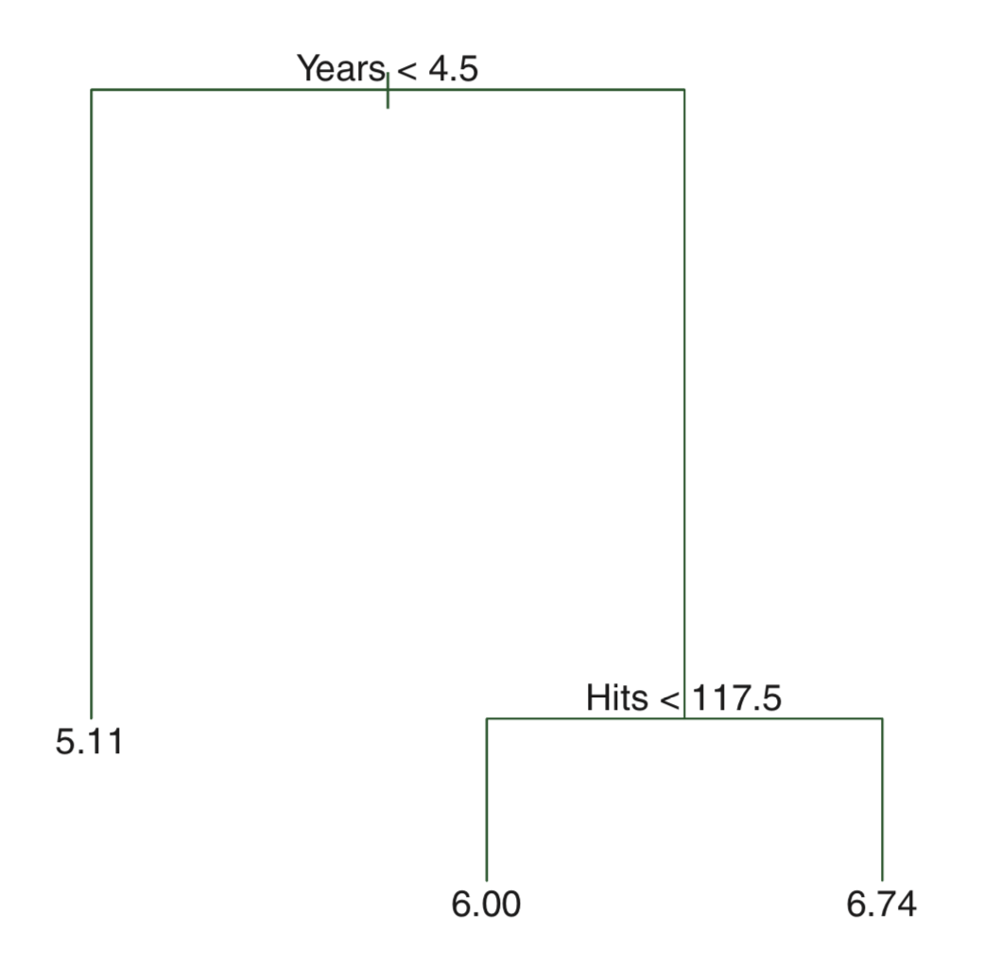
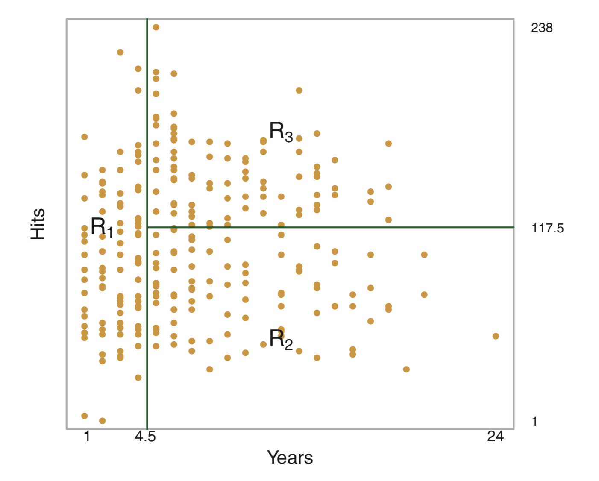
advantage
- glass-box model
- intuitive
아래 식으로 주어진 RSS 를 최소로 하는 셜명변수 공간을 찾는 것이 목적
\[\sum_{j=1}^J\sum_{i\in R_j}(y_i - \hat{y}_{R_j})^2\]
\(R_j\): jth 설명변수 공간
\(\hat{y}_{R_j}\): jth 설명변수 공간에 속한 훈련 관측치 반응변수들의 평균값
그러나…. 설명변수 공간을 J개로 분할하는 모든 가능한 경우를 고려하는 것은 계산상 실현 불가능하다…
recursive binary splitting
- top-down
- greedy
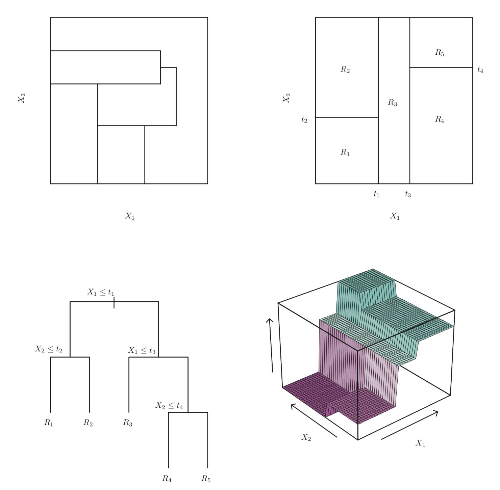
drawbacks
- greedy (short-sighted)
- prone to overfitting
What “greedy” means?
Let’s say currency including 25c, 15c and 1c coins,
and develop an algorithm to make changes for 30c.
final goal: using the smallest number of coins possible
greedy algorithm: use the largest unit of coin
greedy algorithm solution: 25 + 1 + 1 + 1 + 1 + 1 = 30c, with 6 coins
optimal solution: 15 + 15 = 30c, with 2 coins
strategies to overcome drawbacks
pruning
: 트리빌딩 초기 쓸모 없어 보이는 분할 이후에 아주 좋은 분할이 올 수 있다. 따라서, 더 나은 전략은 아주 큰 트리를 만든 다음에 그것을 다시 prune하여 subtree 를 얻는 것이다.
그러나….
모든 가능한 subtree 에 대해 교차 검증(혹은 검증셋 기법)을 이용하여 검정오차율를 추청하는 것은 너무 번거롭다. 대신, 우리는 고려할 작은 subtree 집합을 선택한다.
cost complexity pruning (weakest link pruning)
모든 가능한 subtree 를 고려하는 대신에 tuning parameter \(\alpha\) (>=0) 에 의해 색인된 일련의 tree 들을 고려.
각 \(\alpha\) 값에 대해, 아래 식이 최소가 되는 subtree T 를 구할 수 있다.
\[\sum_{j=1}^J\sum_{i\in R_j}(y_i - \hat{y}_{R_j})^2 + \alpha T\]
T: subtree T 의 number of terminal nodes
\(\alpha\): tuning parameter
\(\alpha = 0\)일 때, subtree T = \(T_0\)
\(\alpha\)가 증가함에 따라 많은 터미널 노드가 있는 트리의 경우 \(\alpha T\) 항이 크게 증가할 것이므로 트리가 작을 때 위 식의 값이 최소로 되는 경향이 있다.
즉, tuning parameter \(\alpha\) 는 서브트리의 복잡도와 훈련자료에 대한 적합 사이의 trade-off 를 제어한다.
k-fold CV 을 이용해서 검정오차를 \(\alpha\)의 함수로 평가하고, 평균 검정오차를 최소로 하는 \(\alpha\)를 선택.
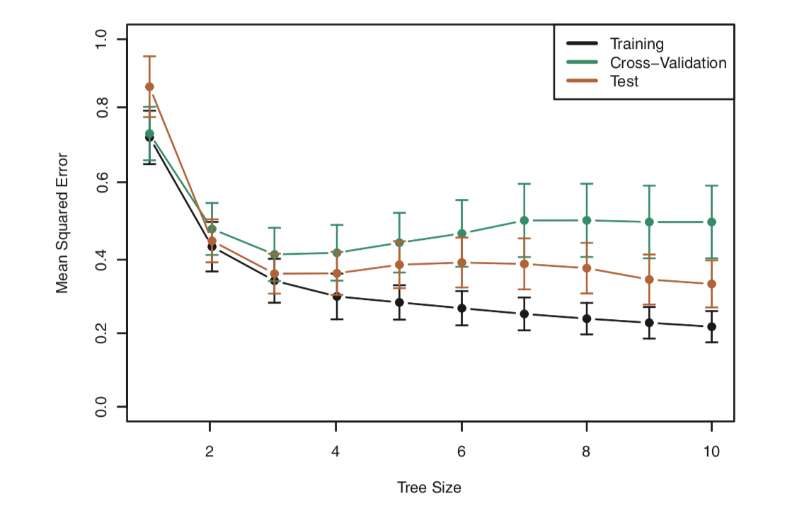
Linear model vs. Tree-based model
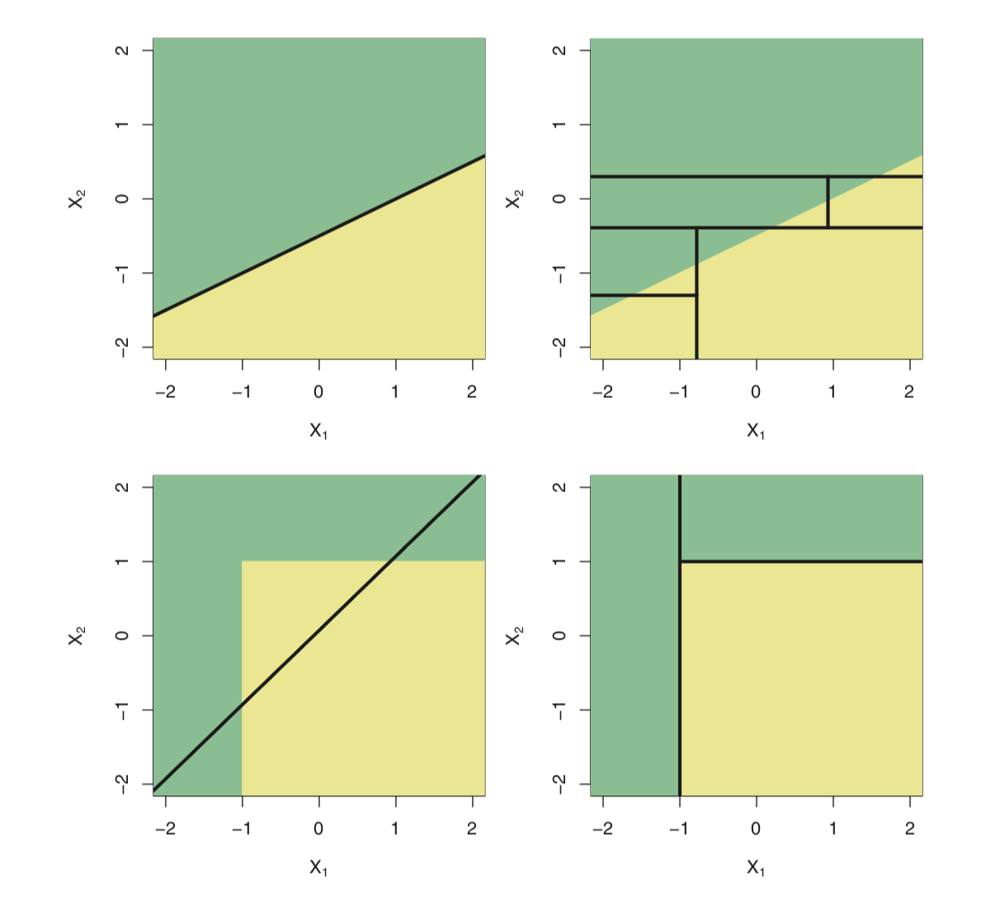
load tree package
library(tree)## Warning: package 'tree' was built under R version 3.4.4load MASS package to use Boston dataset
make train dataset
fit decision tree model to train dataset
library(MASS)
set.seed(1)
train = sample(1:nrow(Boston), nrow(Boston)/2)
tree.boston = tree(medv~., Boston, subset = train)
summary(tree.boston) # deviance: residual sum of square ##
## Regression tree:
## tree(formula = medv ~ ., data = Boston, subset = train)
## Variables actually used in tree construction:
## [1] "lstat" "rm" "dis"
## Number of terminal nodes: 8
## Residual mean deviance: 12.65 = 3099 / 245
## Distribution of residuals:
## Min. 1st Qu. Median Mean 3rd Qu. Max.
## -14.10000 -2.04200 -0.05357 0.00000 1.96000 12.60000plot decision tree
plot(tree.boston)
text(tree.boston)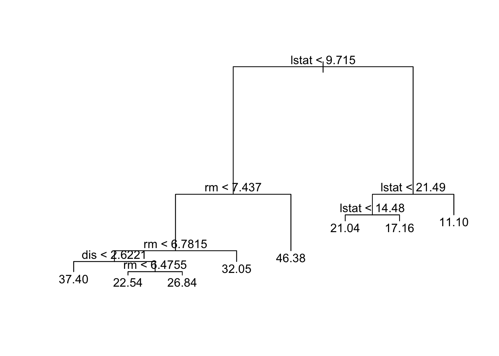
what are the stopping criteria?
?tree## Help on topic 'tree' was found in the following packages:
##
## Package Library
## cli /Library/Frameworks/R.framework/Versions/3.4/Resources/library
## tree /Library/Frameworks/R.framework/Versions/3.4/Resources/library
##
##
## Using the first match ...?tree.controlpruning and cross-validation to set the optimal size of tree
cv.boston = cv.tree(tree.boston) # default K=10, cost complexity pruning
plot(cv.boston$size, cv.boston$dev, type = "b")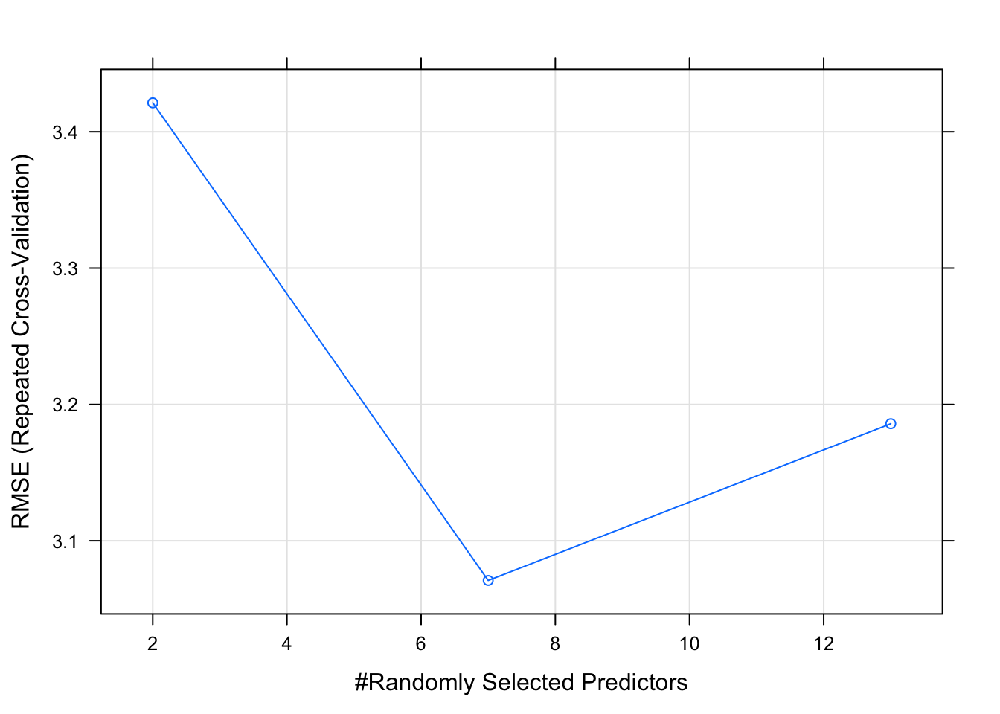
if you want a specific size of tree by pruning
prune.boston = prune.tree(tree.boston, best = 5)
plot(prune.boston)
text(prune.boston)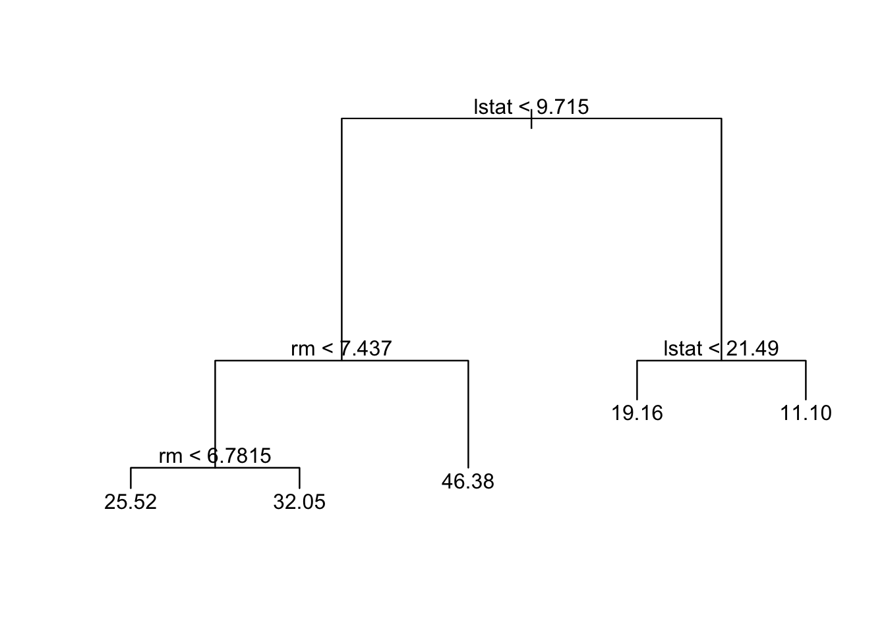
predicted = predict(tree.boston, newdata = Boston[-train,])
observed = Boston[-train,]$medv
plot(predicted, observed)
abline(0,1)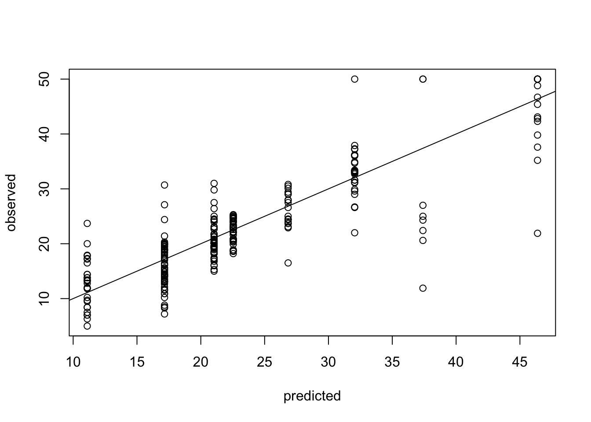
mean((predicted-observed)^2)## [1] 25.04559\(\hat{p}_{mk}\): m번째 설명변수 공간 내 k class에 속하는 훈련 관측치들의 비율
…이라고 할 때, 아래 분류오류율을 최소로 하는 것이 목적이다.
\[E = 1 - \max(\hat{p}_{mk})\]
binary split 과정에서 분류오류율을 사용할 수 있지만…
실제로는 node purity 에 더 민감한 아래 두 가지 척도를 주로 사용한다.
Gini index: node purity \[G = \sum_{k=1}^{K} \hat{p}_{mk}(1-\hat{p}_{mk})\]
Cross-entropy
\[D = - \sum_{k=1}^{K} \hat{p}_{mk}log(\hat{p}_{mk})\]
library(ISLR)##
## Attaching package: 'ISLR'## The following object is masked _by_ '.GlobalEnv':
##
## Autoattach(Carseats)
High = ifelse(Sales<=8, "No", "Yes")
Carseats = data.frame(Carseats, High)set.seed(1)
train = sample(1:nrow(Carseats), 200)
test = Carseats[-train,]
tree.carseats = tree(High~.-Sales, data = Carseats, subset = train)
summary(tree.carseats)##
## Classification tree:
## tree(formula = High ~ . - Sales, data = Carseats, subset = train)
## Variables actually used in tree construction:
## [1] "ShelveLoc" "Price" "Age" "CompPrice" "Income"
## [6] "Advertising" "Education" "US" "Population"
## Number of terminal nodes: 20
## Residual mean deviance: 0.4777 = 85.98 / 180
## Misclassification error rate: 0.09 = 18 / 200plot(tree.carseats)
text(tree.carseats, pretty = 0)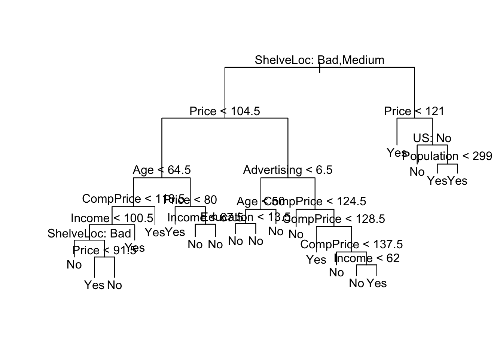
tree.carseats## node), split, n, deviance, yval, (yprob)
## * denotes terminal node
##
## 1) root 200 269.200 No ( 0.60000 0.40000 )
## 2) ShelveLoc: Bad,Medium 164 206.400 No ( 0.67683 0.32317 )
## 4) Price < 104.5 65 89.350 Yes ( 0.44615 0.55385 )
## 8) Age < 64.5 40 47.050 Yes ( 0.27500 0.72500 )
## 16) CompPrice < 118.5 23 31.490 Yes ( 0.43478 0.56522 )
## 32) Income < 100.5 18 24.730 No ( 0.55556 0.44444 )
## 64) ShelveLoc: Bad 5 0.000 No ( 1.00000 0.00000 ) *
## 65) ShelveLoc: Medium 13 17.320 Yes ( 0.38462 0.61538 )
## 130) Price < 91.5 6 0.000 Yes ( 0.00000 1.00000 ) *
## 131) Price > 91.5 7 8.376 No ( 0.71429 0.28571 ) *
## 33) Income > 100.5 5 0.000 Yes ( 0.00000 1.00000 ) *
## 17) CompPrice > 118.5 17 7.606 Yes ( 0.05882 0.94118 ) *
## 9) Age > 64.5 25 29.650 No ( 0.72000 0.28000 )
## 18) Price < 80 5 5.004 Yes ( 0.20000 0.80000 ) *
## 19) Price > 80 20 16.910 No ( 0.85000 0.15000 )
## 38) Income < 67.5 9 11.460 No ( 0.66667 0.33333 ) *
## 39) Income > 67.5 11 0.000 No ( 1.00000 0.00000 ) *
## 5) Price > 104.5 99 90.800 No ( 0.82828 0.17172 )
## 10) Advertising < 6.5 57 23.510 No ( 0.94737 0.05263 )
## 20) Age < 50 21 17.220 No ( 0.85714 0.14286 )
## 40) Education < 13.5 11 12.890 No ( 0.72727 0.27273 ) *
## 41) Education > 13.5 10 0.000 No ( 1.00000 0.00000 ) *
## 21) Age > 50 36 0.000 No ( 1.00000 0.00000 ) *
## 11) Advertising > 6.5 42 53.470 No ( 0.66667 0.33333 )
## 22) CompPrice < 124.5 14 7.205 No ( 0.92857 0.07143 ) *
## 23) CompPrice > 124.5 28 38.670 No ( 0.53571 0.46429 )
## 46) CompPrice < 128.5 6 0.000 Yes ( 0.00000 1.00000 ) *
## 47) CompPrice > 128.5 22 27.520 No ( 0.68182 0.31818 )
## 94) CompPrice < 137.5 11 6.702 No ( 0.90909 0.09091 ) *
## 95) CompPrice > 137.5 11 15.160 Yes ( 0.45455 0.54545 )
## 190) Income < 62 5 5.004 No ( 0.80000 0.20000 ) *
## 191) Income > 62 6 5.407 Yes ( 0.16667 0.83333 ) *
## 3) ShelveLoc: Good 36 40.490 Yes ( 0.25000 0.75000 )
## 6) Price < 121 15 0.000 Yes ( 0.00000 1.00000 ) *
## 7) Price > 121 21 28.680 Yes ( 0.42857 0.57143 )
## 14) US: No 7 5.742 No ( 0.85714 0.14286 ) *
## 15) US: Yes 14 14.550 Yes ( 0.21429 0.78571 )
## 30) Population < 299 8 10.590 Yes ( 0.37500 0.62500 ) *
## 31) Population > 299 6 0.000 Yes ( 0.00000 1.00000 ) *pred.class = predict(tree.carseats, newdata = test, type = "class")
table(pred.class, test$High)##
## pred.class No Yes
## No 98 28
## Yes 18 56mean(pred.class == test$High)## [1] 0.77cost complexity pruning and 10-fold CV
set.seed(2)
cv.carseats = cv.tree(tree.carseats, FUN = prune.misclass)plot(cv.carseats$size, cv.carseats$dev, type = "b")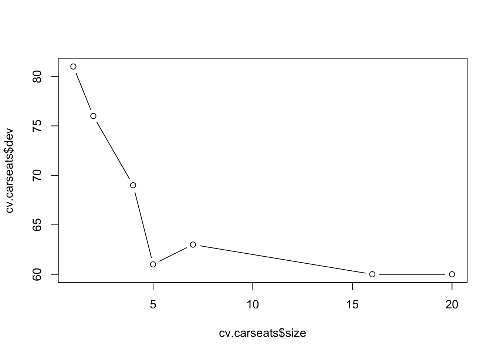
prune.carseats = prune.misclass(tree.carseats, best = 5)
plot(prune.carseats)
text(prune.carseats, pretty = 0)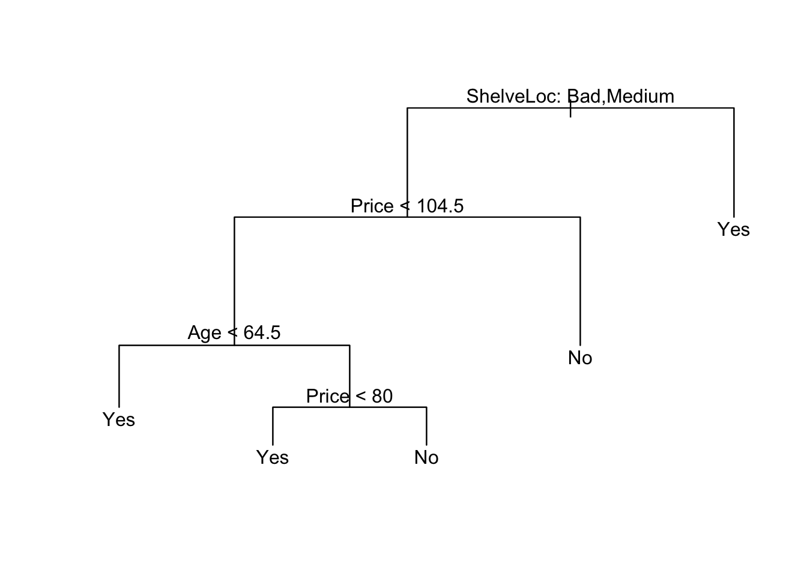
tree.pred = predict(prune.carseats, test, type = "class")
table(tree.pred, test$High)##
## tree.pred No Yes
## No 92 28
## Yes 24 56mean(tree.pred == test$High)## [1] 0.74aka bootstrap aggregation
기계학습모델의 분산을 줄여 예측 정확도를 증가시키기 위한 범용 절차 (general-purpose procedure)
\[\hat{f}_{bag}(x) = \frac{1}{B}\sum_{b=1}^{B}\hat{f}_b(x)\] average for regression
majority rule for classification
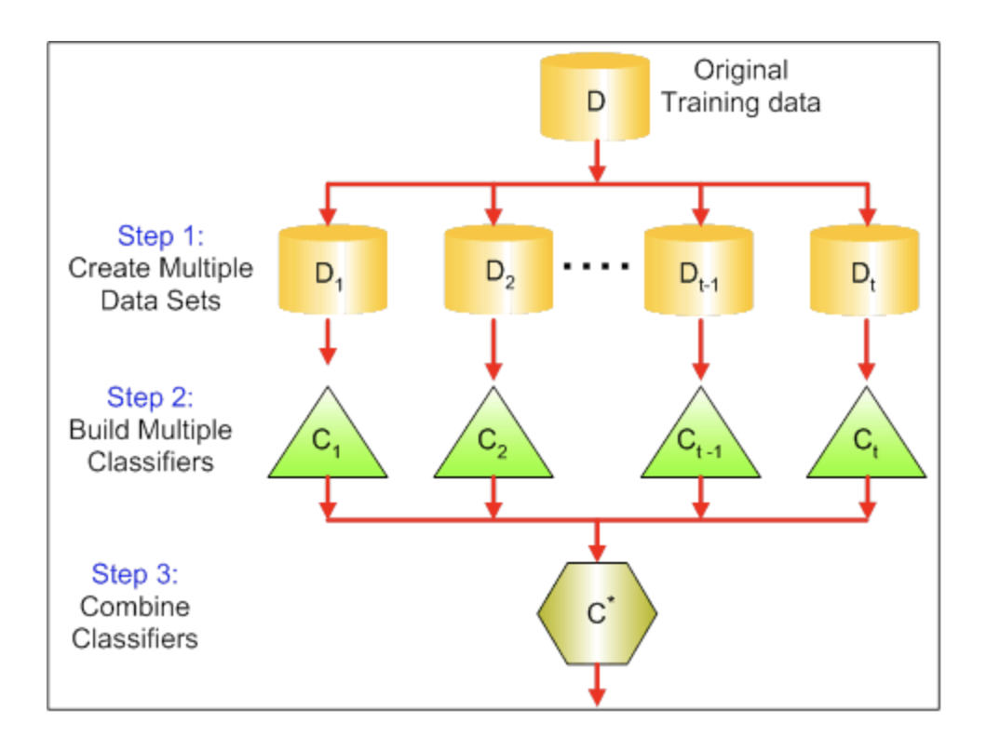
배깅에 사용되지 않은 관측치들을 Out-of-bag (OOB) 관측치라고 함.
OOB 오차
: i번째 관측치에 대해 그 관측치가 OOB 이었던 각각의 트리를 이용하여 반응변수 값을 예측할 수 있다.
: 교차검증 또는 검증셋 기법을 수행하기 힘든 규모가 큰 데이터셋에 대해 특히 편리함.
Variable importance 주어진 설명변수에 대한 분할로 RSS (or Gini index) 가 감소되는 총량을 모든 B개 트리에 대해 평균한 값이 크면 해당 설명변수가 중요하다고 할 수 있다.
배깅에서와 마찬가지로 bootstrap 에 의해 다수의 트리를 만든다. 그러나, 배깅과 달리 트리 내에서 split 이 고려될 때마다 p개 설명변수들의 전체 집합에서 랜덤하게 m개 설명변수가 선택된다. rule of thumb, \(m = \sqrt{p}\)
결국, 트리들 간의 상관성을 줄여, 분산을 줄이는 방법임.
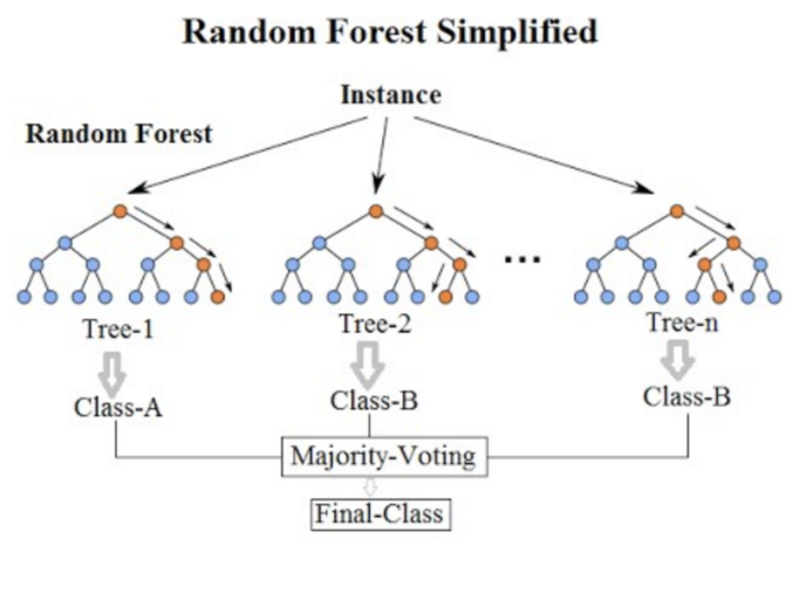
library(randomForest)## randomForest 4.6-12## Type rfNews() to see new features/changes/bug fixes.##
## Attaching package: 'randomForest'## The following object is masked from 'package:ggplot2':
##
## margin## The following object is masked from 'package:dplyr':
##
## combineset.seed(1)
bag.boston = randomForest(medv ~., data=Boston, subset=train, ntree=500, mtry=13, importance=T)
bag.boston##
## Call:
## randomForest(formula = medv ~ ., data = Boston, ntree = 500, mtry = 13, importance = T, subset = train)
## Type of random forest: regression
## Number of trees: 500
## No. of variables tried at each split: 13
##
## Mean of squared residuals: 17.8728
## % Var explained: 79.63test set 에서의 성능
predicted.bag = predict(bag.boston, newdata = Boston[-train,])
plot(predicted.bag, Boston[-train,]$medv)
abline(0,1)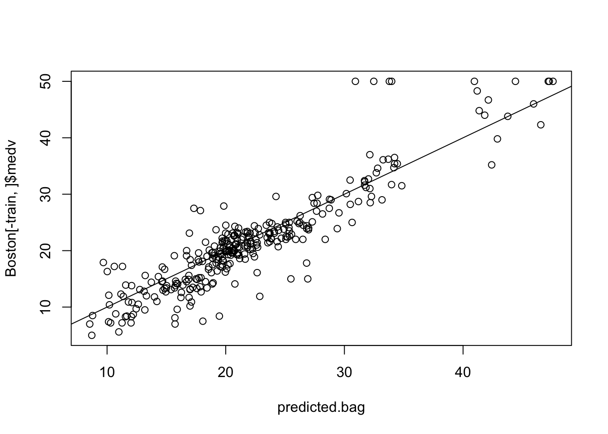
mean((predicted.bag - Boston[-train,]$medv)^2)## [1] 14.35499rf.boston = randomForest(medv ~., data=Boston, subset=train, ntree=500, mtry=6, importance=T)
rf.boston##
## Call:
## randomForest(formula = medv ~ ., data = Boston, ntree = 500, mtry = 6, importance = T, subset = train)
## Type of random forest: regression
## Number of trees: 500
## No. of variables tried at each split: 6
##
## Mean of squared residuals: 17.37437
## % Var explained: 80.2predicted.rf = predict(rf.boston, newdata = Boston[-train,])
plot(predicted.rf, Boston[-train,]$medv)
abline(0,1)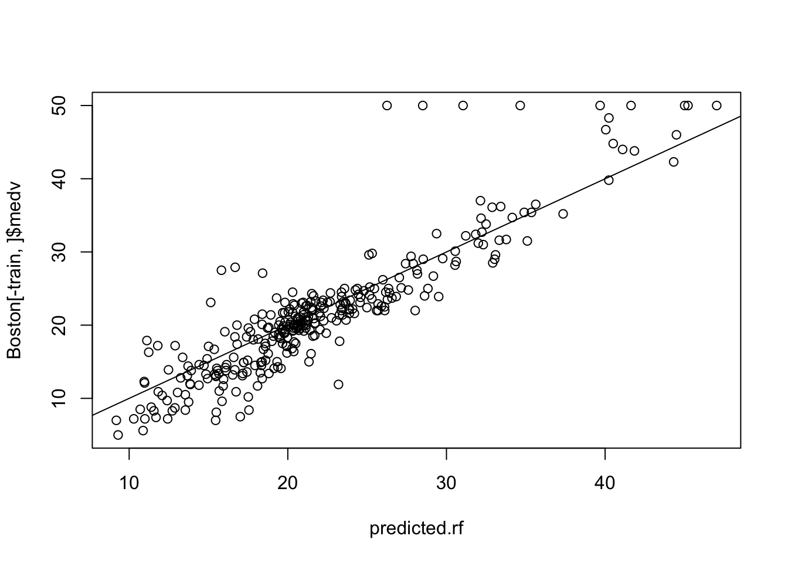
mean((predicted.rf - Boston[-train,]$medv)^2)## [1] 15.56216importance(rf.boston)## %IncMSE IncNodePurity
## crim 8.928240 790.80812
## zn 2.797142 140.71580
## indus 8.536217 902.03854
## chas 1.602182 76.16140
## nox 6.526497 437.17242
## rm 35.013173 6656.58973
## age 10.310380 700.04369
## dis 11.530780 1030.95370
## rad 3.913138 130.41950
## tax 8.092922 420.13113
## ptratio 11.669960 874.09895
## black 5.427635 233.42339
## lstat 26.870479 4807.13895
## age_gr 4.573095 63.03782%IncMSE: 주어진 변수가 모델에서 제외될 때 OOB 에서 예측 정확도의 평균 감소량
IncNodePurity: 주어진 변수에 대한 분할로 인한 노드 purity 의 증가량(RSS의 감소량, deviance의 감소량)을 모든 트리에 대해 평균한 것
varImpPlot(rf.boston)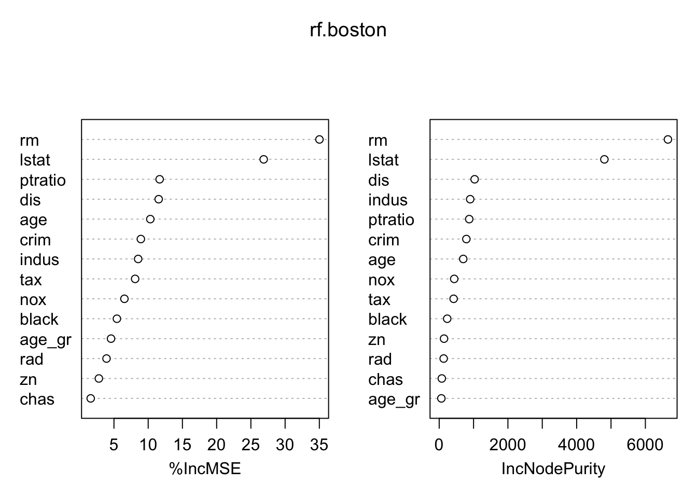
여러개의 decision tree 를 만들어 결합하는데, 배깅과 달리 bootstrap 샘플링을 하지 않고, 대신…
모든 훈련셋 자료를 이용하여 순차적으로… 천천히… 학습한다.
Regression decision tree boosting
\(\hat{f}(x)\) = 0 이라 하고, 훈련셋의 모든 i에 대해 \(r_i = y_i\) 로 설정한다. (r: residuals)
b = 1,2,…,B 에 대하여 다음을 반복한다.
d개의 분할(d+1 터미널 노드)을 가진 트리 \(\hat{f}^b\)를 훈련자료 (X,r)에 적합한다.
새로운 트리의 수축 버전을 더하여 \(\hat{f}(x)\) 를 업데이트한다.
\[\hat{f}(x) \leftarrow \hat{f}(x) + \lambda \hat{f}^b(x)\]
\[r_i \leftarrow r_i - \lambda \hat{f}^b(x_i)\]
\[\hat{f}(x) = \sum_{b=1}^B \lambda \hat{f}^b(x)\]
Boosting 의 tuning parameters
- B: number of trees - \(\lambda\): 수축 파라미터 (학습 속도를 제어)
- d: number of split in each tree (boosting 의 복잡도를 제어)
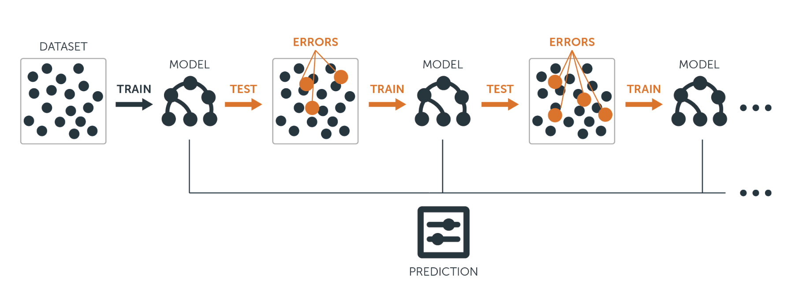
library(gbm)## Loading required package: survival##
## Attaching package: 'survival'## The following object is masked from 'package:boot':
##
## aml## The following object is masked from 'package:caret':
##
## cluster## Loading required package: splines## Loading required package: parallel## Loaded gbm 2.1.3set.seed(1)
boost.boston = gbm(medv~., data = Boston[train,], distribution = "gaussian", n.trees = 5000, interaction.depth = 4) # shrinkage = 0.001summary(boost.boston)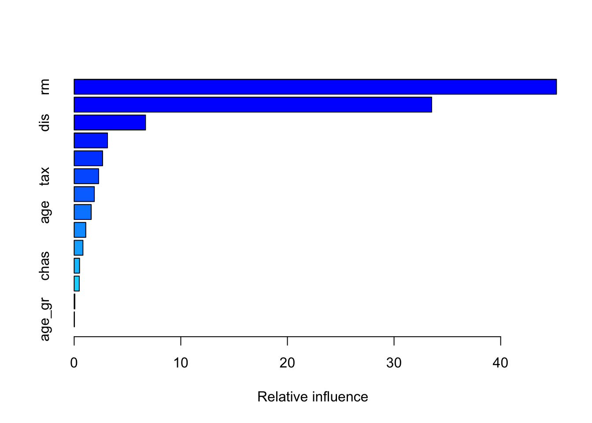
## var rel.inf
## rm rm 45.23474884
## lstat lstat 33.52900527
## dis dis 6.69068908
## ptratio ptratio 3.12514893
## crim crim 2.66473787
## tax tax 2.29158273
## nox nox 1.88762798
## age age 1.59755003
## black black 1.08863987
## indus indus 0.82183606
## chas chas 0.50357916
## rad rad 0.47703757
## zn zn 0.06098551
## age_gr age_gr 0.02683109partial dependence plot (PD plot)
par(mfrow=c(1,2))
plot(boost.boston, i = "rm")
plot(boost.boston, i= "lstat")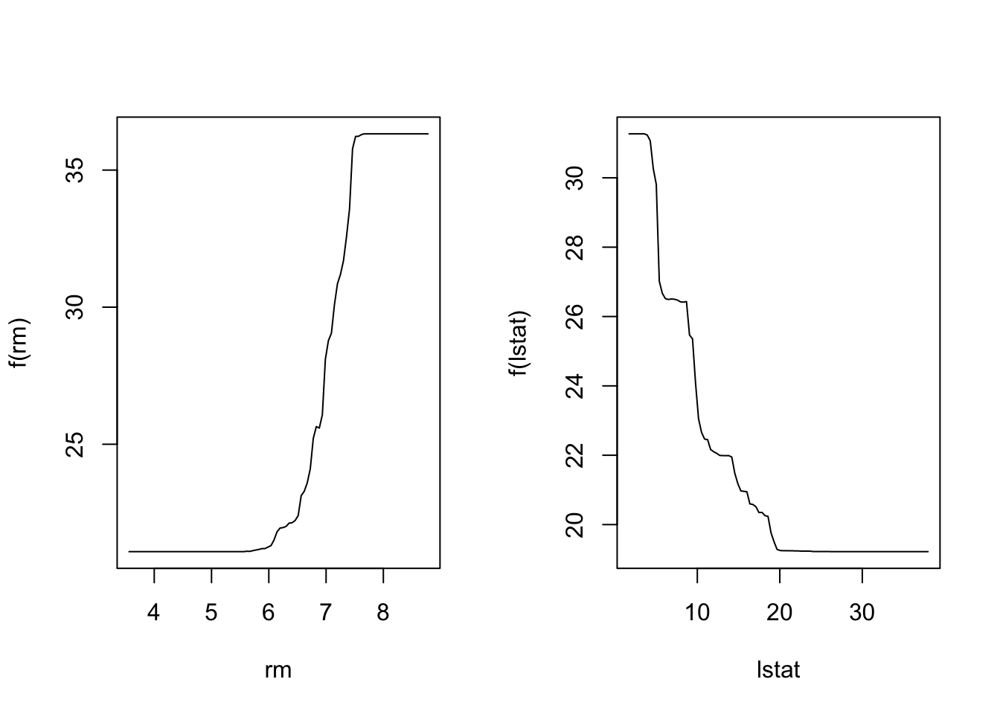
predicted.boost = predict(boost.boston, newdata = Boston[-train,], n.trees = 5000)
mean((predicted.boost - Boston[-train,]$medv)^2)## [1] 15.32246